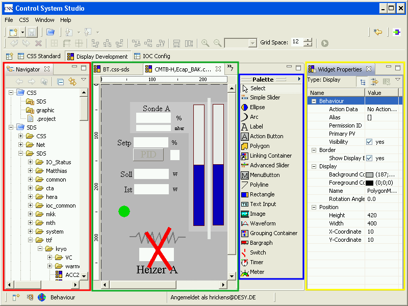

Synoptic Display Studio (SDS) is a graphical operator interface that represents the structure and current state of a plant. The structure is composed of basic elements so called widgets like labels, meters or bargraphs. To build up a part of a plant the widgets can be arranged in the edit mode of SDS on displays. In the execute or run mode the operators can control the processes via the displays.

(red)The navigator view shows the CSS projects in the workspace. A CSS project holds the configuration files for SDS displays and files of other CSS applications.
green / blue)The Editor shows the displays in the edit mode and provides grid, align, ruler, etc. On the right side is the palette with all available widgets. There is a drag and drop support that connects a process variable from another CSS application automatically with a widget.
(yellow)For each selected widget in the editor the widget property view shows all available properties. It is possible to dynamise *LINK* each property. That means that a property is connected to a process variable and changes with the value of the variable.